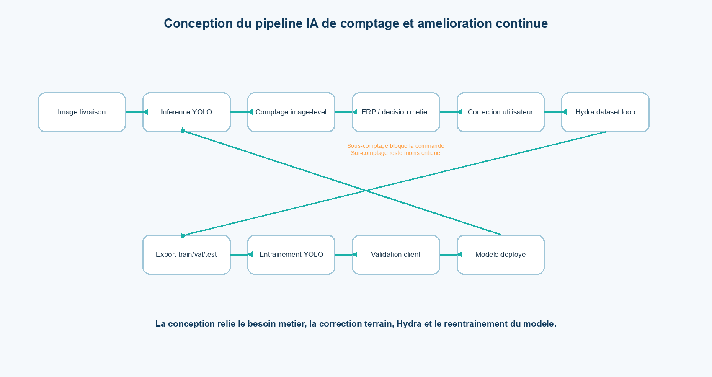
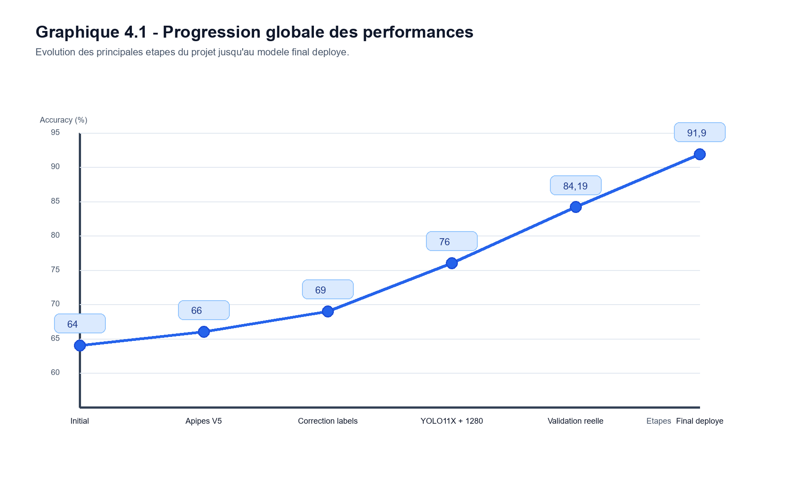
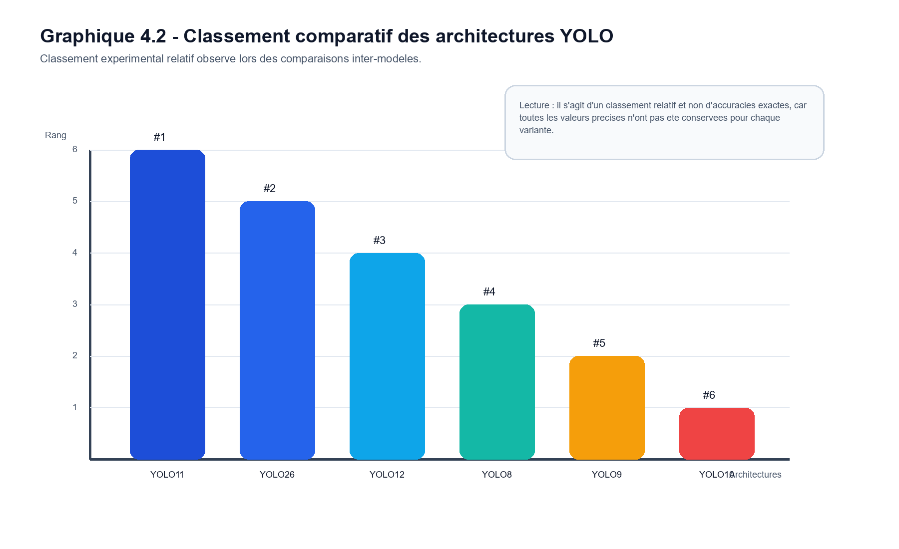
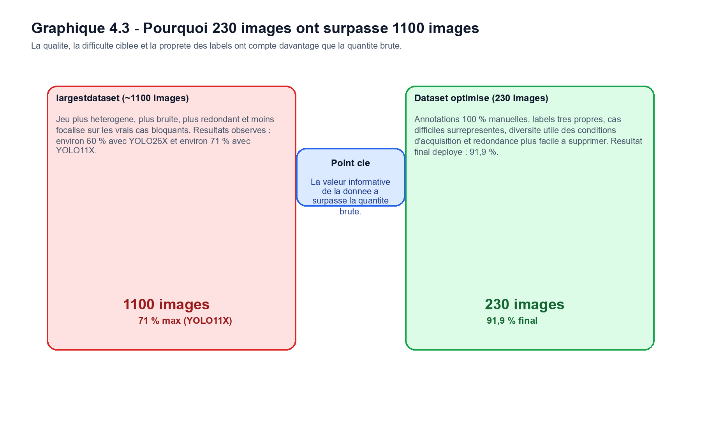
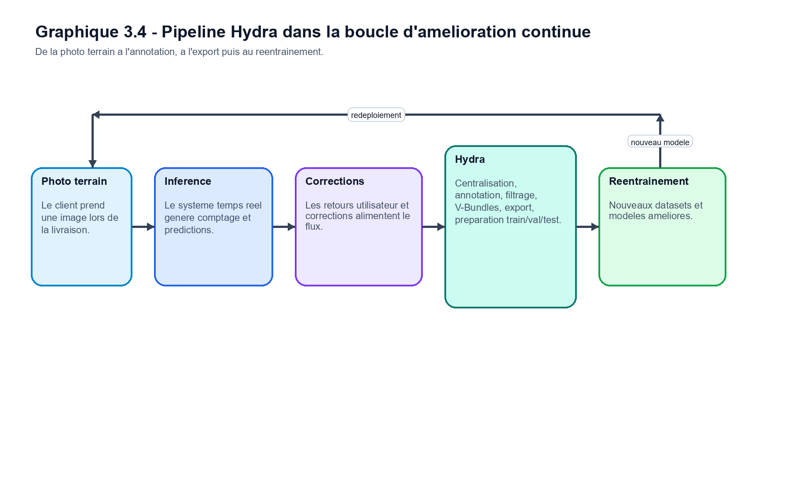
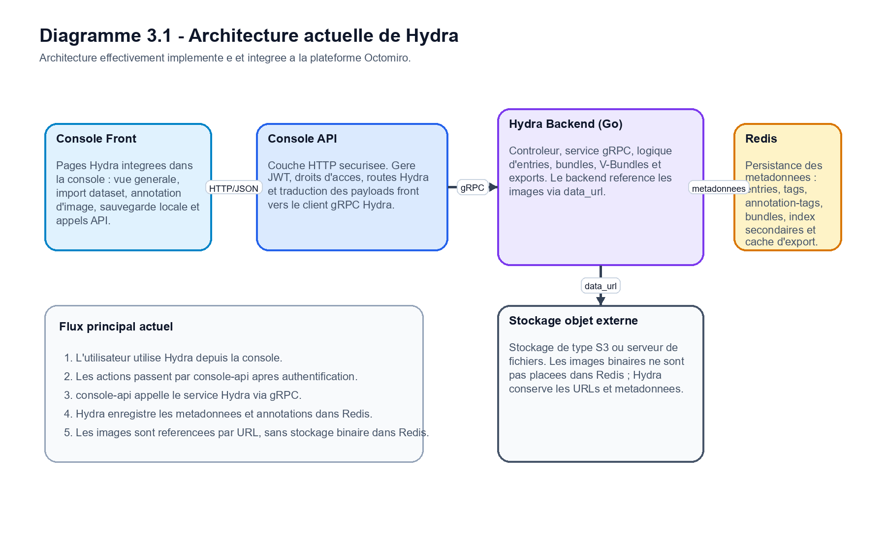

Industrial computer vision
Tube counting, visual inspection, defect detection, long-video processing, object counting, line crossing, ROI logic, and deployment for operational use.
YOLOOpenCVMAE
Computer Vision | Applied AI | Industrial AI Systems
I build complete AI workflows: datasets, annotation tools, model experiments, evaluation protocols, backend inference, and deployment-ready computer vision systems.
My strongest work is in computer vision systems where the model is only one part of the solution. I focus on the full loop: real data, annotation quality, model selection, error analysis, deployment constraints, and business metrics.
Tube counting, visual inspection, defect detection, long-video processing, object counting, line crossing, ROI logic, and deployment for operational use.
Recognition of visually similar retail products using detection, embeddings, adapters, nearest-neighbor retrieval, and reference gallery engineering.
FastAPI services, GPU inference, batch endpoints, annotation platforms, experiment tracking, and model testing environments for real users.
The PFE goal was to improve an industrial tube counting model for real client delivery images. This was not a simple detection demo: the model had to count dense, repetitive objects reliably enough to support operational decisions and reduce manual counting.


Reproduced the initial YOLO11M model around 64%, analyzed label quality, counted failure modes, and separated simple from difficult scenes.
Built and corrected Appipes V5, improved labels, tested image sizes such as 640 and 1280, and evaluated impact on real counting metrics.
Benchmarked YOLOv8, YOLOv9, YOLOv10, YOLOv11, YOLOv12, and YOLO26 variants. YOLO11 was strongest overall; YOLO26 helped on very complex scenes.
Tested controlled overfitting on difficult samples, multi-class group counting, segmentation, NMS behavior, hybrid models, and classifier-based orchestration.
A smaller but cleaner dataset of 230 manually curated training images outperformed larger heterogeneous datasets and led to the final YOLO11M choice.
Built a backend environment for online model testing, validated on real March/April delivery images, and deployed the final model in the client workflow.


Hydra was the platform side of the PFE: an internal annotation and dataset iteration tool built to support real computer vision workflows. My contribution covered the full frontend and part of the backend.
React frontend, Go backend, typed gRPC communication through hydra_grpc, Redis metadata, and S3-compatible object storage for images.
The pipe-counting performance gains depended heavily on faster dataset correction and iteration. Hydra connected annotation work directly to training and validation.


The portfolio is broader than one PFE. These projects show work across industrial vision, retail recognition, video analytics, anomaly detection, deployment, and research-oriented ideas.
YOLO, DINOv2, DINOv3, ResNet, CLIP exploration, FAISS, kNN, OpenCV, SSIM, SAM/SAM2 ideas, PyTorch, TensorFlow, scikit-learn.
YOLO/COCO formats, annotation QA, semi-annotation, auto-labeling, difficult-sample selection, top-1/top-5, precision, recall, MAE, Optuna, W&B, Excel logs.
FastAPI, Uvicorn, REST APIs, batch inference, GPU environments, AWS/EC2, Cloudflare Tunnel, JSON responses, annotated images, ZIP outputs.
Python, Go, gRPC, Redis, S3-compatible storage, React, TypeScript, JavaScript, HTML/CSS, FFmpeg, Git/GitHub.
Some work was built in company contexts. I do not publish private datasets, model weights, production code, client images, or sensitive business details. I can discuss anonymized architectures, evaluation protocols, failure cases, deployment constraints, and non-sensitive results in academic or professional interviews.